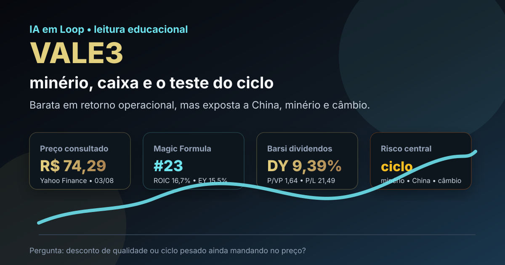

03/08: VALE3, minério e dividendos no teste do ciclo
VALE3 voltou ao radar porque combina escala global, dividendos relevantes e desconto frente à máxima em 52 semanas. A pergunta central é direta: o preço ainda oferece margem de segurança ou o ciclo de minério, China e câmbio continua mandando mais que os múltiplos?

VALE3 tem escala, caixa e dividendos; a tese melhora quando minério e disciplina de capital caminham juntos, mas piora rápido se o ciclo virar contra.
Resposta curta: desconto existe, mas não elimina o risco de ciclo
No ranking Magic Formula filtrado do IA em Loop, VALE3 aparece no grupo de estudo com ROIC de 16,7%, earnings yield de 15,5% e score 63. No rastreador Barsi mais recente, a ação aparece como empresa perene, com dividend yield de 9,39%, P/VP de 1,64 e P/L de 21,49.
A fotografia de mercado também é mista. Consulta ao Yahoo Finance em 03/08/2026 mostrou VALE3 a R$ 74,29, com máxima de 52 semanas em R$ 91,62 e mínima em R$ 52,86. Ou seja: o papel está cerca de 18,9% abaixo do topo anual, mas ainda 40,5% acima do piso. Não é preço de pânico; é preço de empresa cíclica com prêmio e desconto ao mesmo tempo.
Por que VALE3 importa agora
O noticiário público recente reforçou o tema operacional: manchetes do Google Notícias em 03/08 citavam aumento de 21% na produção de minério de ferro no segundo trimestre e também maior volume vendido, em leitura atribuída a veículos como UOL Economia e Valor Investe. Isso melhora a percepção de execução, especialmente quando a produção vem acompanhada de preço realizado mais favorável.
Mas Vale nunca é só execução interna. A empresa depende de preço do minério, demanda chinesa, custo logístico, câmbio, licenças, passivos ambientais, capex e disciplina de dividendos. O ranking ajuda a colocar o papel no radar, mas a decisão educacional precisa separar geração recorrente de caixa de vento favorável de commodity.
| Métrica | Valor verificado | Leitura |
|---|---|---|
| ROIC no ranking local | 16,7% | retorno aceitável para uma companhia intensiva em capital |
| Earnings yield local | 15,5% | sinal de valuation ainda razoável no filtro quantitativo |
| Dividend yield no rastreador Barsi | 9,39% | renda relevante, mas dependente do ciclo de caixa |
| Preço x máxima de 52 semanas | R$ 74,29 x R$ 91,62 | desconto de 18,9% contra o topo |
| Preço x mínima de 52 semanas | R$ 74,29 x R$ 52,86 | não está em zona de estresse extremo |
VALE3 é uma tese de qualidade cíclica: pode ser boa quando preço, minério e dividendos oferecem margem de segurança, mas não deve ser lida como defensiva pura. O gatilho principal é confirmar se produção maior vira caixa livre sem exigir capex excessivo ou aumentar risco operacional.
O que favorece e o que ameaça a tese
Favoráveis
• Escala global e posição relevante em minério de ferro.
• Dividend yield elevado no rastreador Barsi.
• ROIC e earnings yield suficientes para aparecer no ranking local.
• Noticiário recente apontando produção e vendas maiores no trimestre.
• Liquidez alta, facilitando acompanhamento e eventual rebalanceamento.
Desfavoráveis
• Dependência de minério, China e câmbio.
• P/L do rastreador Barsi não é baixo o bastante para ignorar ciclo.
• Passivos ambientais e licenças podem afetar caixa e percepção de risco.
• Dividendos podem cair se preço do minério ou geração de caixa piorarem.
• A ação já se afastou bastante da mínima anual.
Checklist para acompanhar
| Indicador | O que precisa acontecer | Leitura se falhar |
|---|---|---|
| Minério de ferro | Preço realizado sustentar margem | lucro pode normalizar para baixo |
| China | Demanda por aço não deteriorar | volume maior perde força se preço cair |
| Caixa livre | Produção maior virar caixa depois de capex | dividendos ficam menos previsíveis |
| Passivos e licenças | Sem novas pressões materiais | desconto de risco aumenta |
| Preço de entrada | Comprar apenas com margem contra ciclo ruim | risco de entrar no meio do ciclo |
Conclusão
VALE3 responde à pergunta do dia com uma leitura equilibrada: há desconto frente à máxima anual e bons sinais de caixa, mas a tese continua comandada pelo ciclo de minério. O ranking coloca a empresa no radar; o dividend yield chama atenção; a notícia de produção reforça execução. Ainda assim, o preço não parece extremo o bastante para dispensar disciplina.
A conclusão educacional é: VALE3 merece acompanhamento com viés seletivo, não compra automática. Para entrar ou aumentar posição, a margem de segurança precisa compensar minério, China, câmbio e passivos. Sem isso, o investidor pode comprar uma boa empresa no momento errado do ciclo.